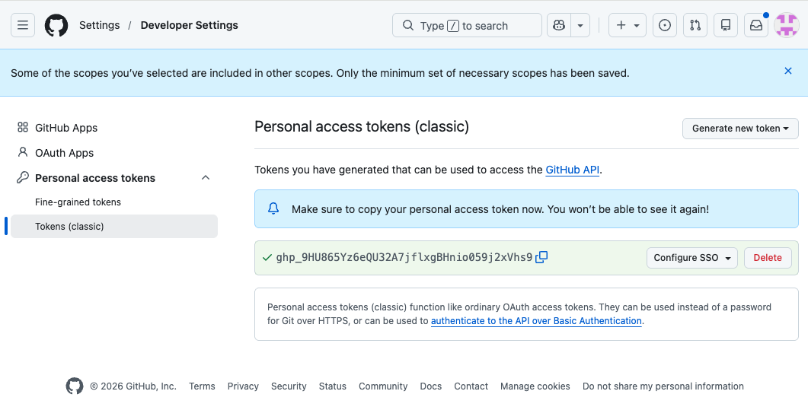
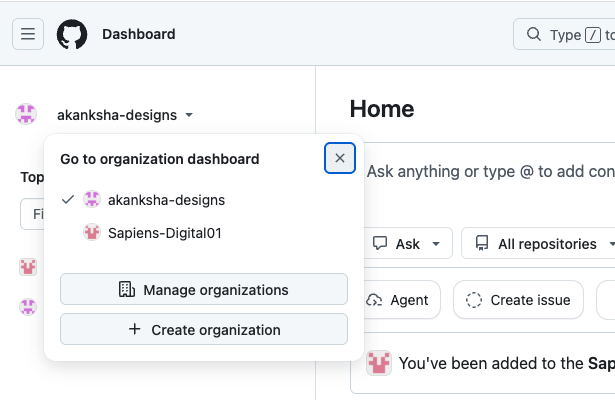

01
Access
Connect with GitHub
Before anything else, you need access to the GitHub repository. GitHub is the source of truth for all code — it tracks every change, who made it, and why.
What to do
- Create a GitHub account at github.com if you don't have one
- Ask the repo owner to add you as a collaborator — Settings → Collaborators
- Generate a Personal Access Token — GitHub no longer accepts passwords
Profile → Settings → Developer Settings → Tokens (classic) → repo scope - Save the token — you'll paste it as your password in the terminal

